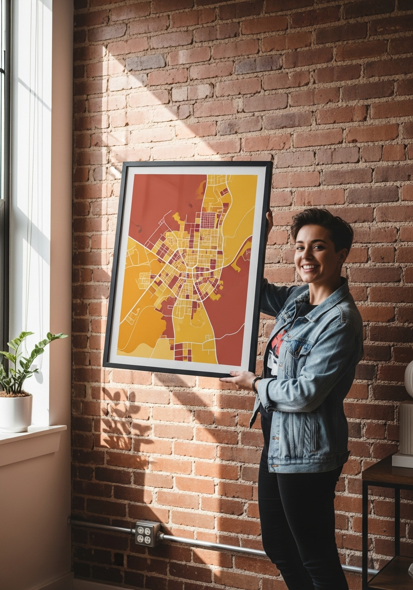

Real Nashville, not a souvenir rack
Nashville deserves better than a tourist-shop poster.
Gallery-framed prints of actual neighborhoods — Music Row, 12 South, East Nashville. Made to order.
Find your Nashville street→
Gallery-framed prints of actual neighborhoods — Music Row, 12 South, East Nashville. Made to order.
Find your Nashville street→